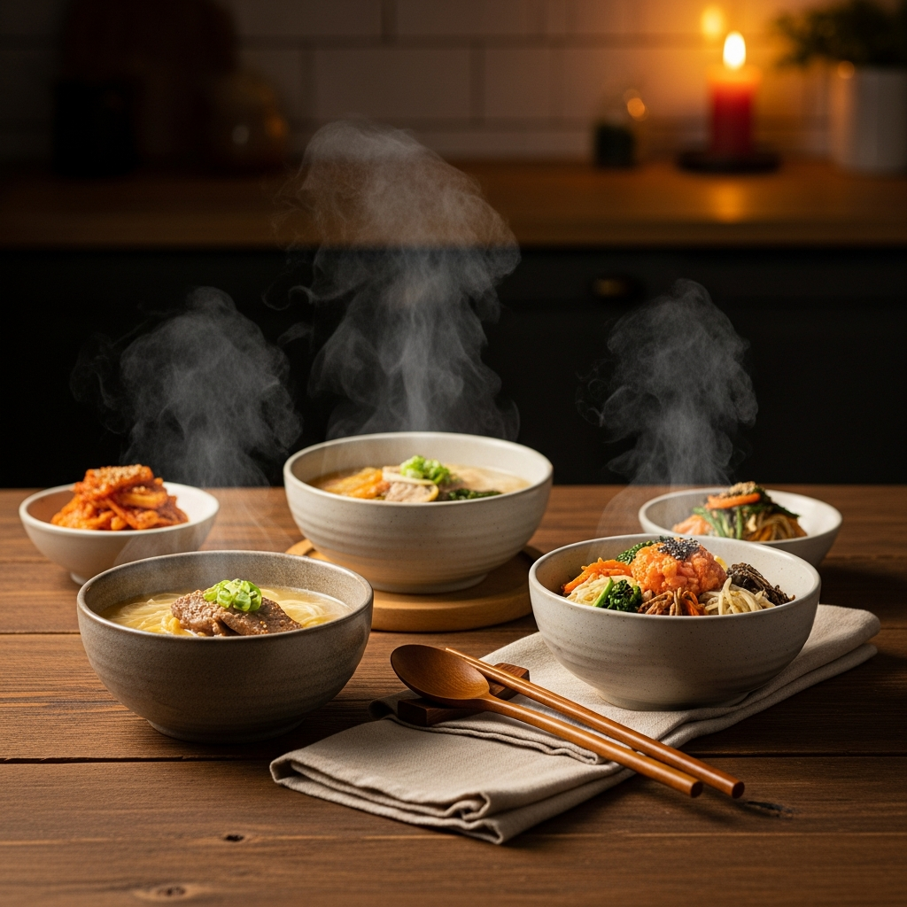
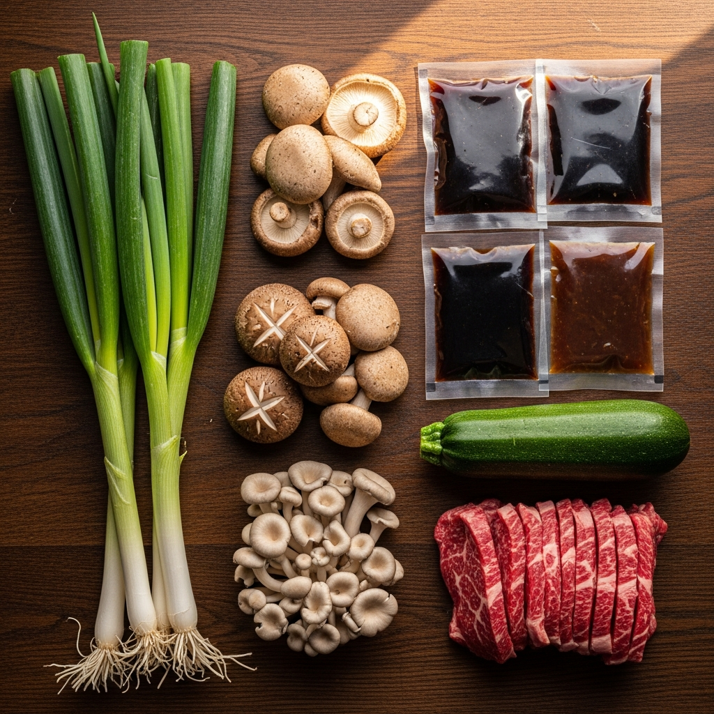
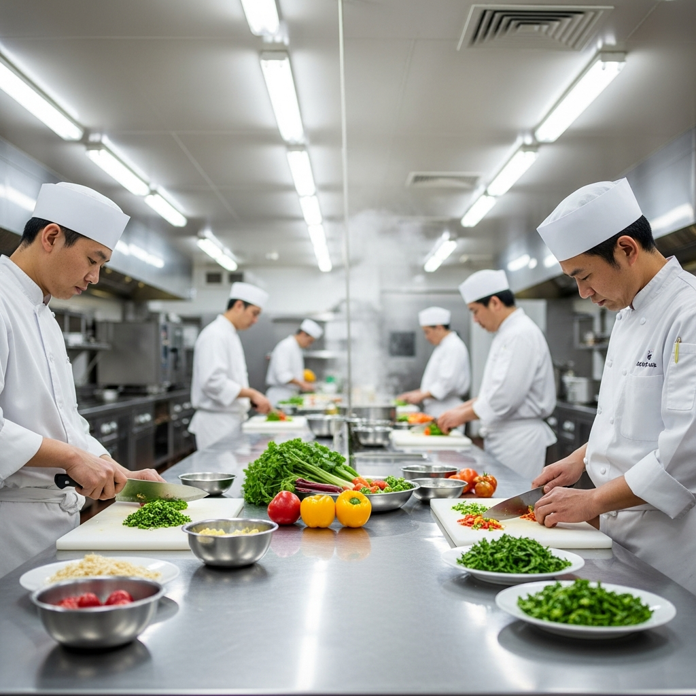
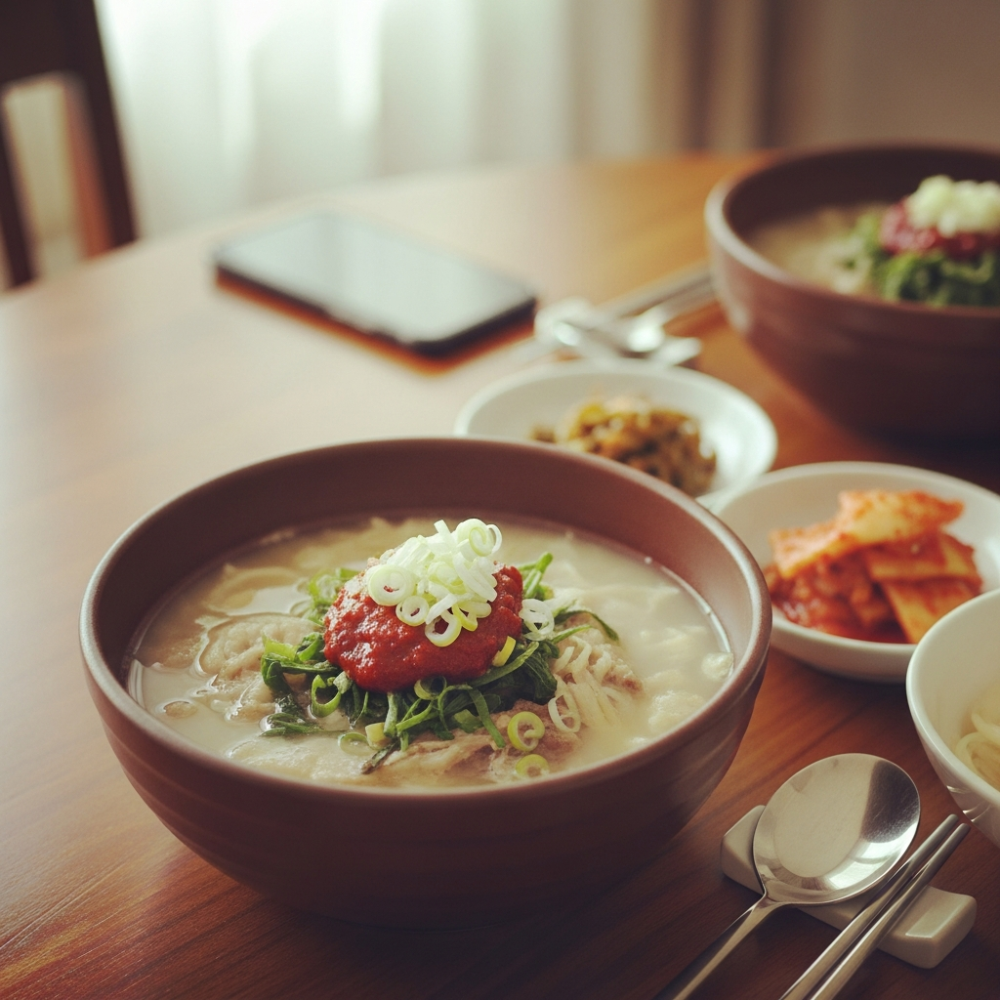

퇴근 후 15분,
나를 위한 진짜 한끼
빠르고, 맛있고, 건강해요
요리 경험 없어도 괜찮아요. 순서대로 따라만 하면 끝이에요.
전문 셰프가 개발한 황금 레시피를 그대로 집에서 만들어요.
국내산 신선 재료만 엄선했어요. 첨가물 걱정 없이 드세요.

국내산, 제철, 신선함만 담았어요
* 원산지 표시는 제품 패키지에서 확인하세요

매일 아침, 그날 배송분만 신선하게 제조해요
대량 생산 라인이 아닌, 셰프가 운영하는 전용 주방에서 만들어요. 당일 조리·당일 배송 원칙을 지키기 때문에 언제나 가장 신선한 상태로 받아볼 수 있어요. HACCP 인증 시설에서 위생 기준을 철저히 지켜 만들고, 식약처 규정에 따라 안전하게 포장해요.
당일 입고된 신선 재료를 세척·손질해요
사골과 채소를 24시간 끓여 깊은 육수를 만들어요
HACCP 인증 공간에서 위생 포장 후 당일 출고해요
진한 국물 한 모금에 하루의 피로가 녹아요
사골을 24시간 우려낸 진국에 국내산 소고기 사태를 듬뿍 넣었어요. 얼큰하면서도 텁텁하지 않은 개운한 뒷맛이 특징이에요. 퇴근 후 몸이 으슬으슬할 때, 이 국물 한 그릇이면 충분해요.
건강하게, 맛있게.
가볍지만 든든해요
색색의 제철 나물과 고슬한 유기농 쌀밥 위에, 진한 참기름을 둘러 완성해요. 매콤한 고추장 소스를 기호에 맞게 조절할 수 있어 남녀노소 즐길 수 있어요. 칼로리는 낮추고 포만감은 살린 든든한 한끼예요.
끓이고, 섞고, 담으면 끝이에요
냄비에 물 500ml를 붓고 센 불에서 끓여요. 전기 주전자도 OK예요.
육수 베이스와 건더기를 순서대로 넣고 5분간 더 끓여요.
그릇에 담고 파·참깨 고명을 올리면 완성이에요. 수고했어요!
저만 좋은 게 아니에요
퇴근하고 지쳐서 아무것도 하기 싫을 때 딱이에요. 15분이 이렇게 짧은 줄 몰랐어요. 국물이 정말 진하고 맛있어서 자취 시작하고 처음으로 집밥 느낌이 났어요.
비빔밥 처음 시켜봤는데 나물이 엄청 신선해요. 마트에서 사 먹는 나물과 급이 달라요. 재구매 무조건 할 거예요. 다음엔 국밥도 도전해볼게요.
혼밥하면 항상 배달이었는데 이게 더 건강하고 맛있어요. 배달비도 없고 기다리지도 않아도 되니 너무 편해요. 주변 친구들한테도 다 추천했어요.
네이버 쇼핑 4.9점 기준 · 12,300개 리뷰
배달보다 건강하고, 요리보다 쉬워요

처음엔 반신반의했어요. '밀키트가 얼마나 맛있겠어'라고 생각했거든요. 근데 첫 입에 생각이 바뀌었어요. 국물이 이렇게 진할 수 있구나 싶었고, 15분이 맞나 싶을 정도로 금방 됐어요. 지금은 일주일에 3번은 꼭 시켜요. 냉장고에 늘 쌓아두고 먹는데 신선도가 유지되는 게 신기해요. 혼자 사는 분들한테 진심으로 추천해요.
궁금한 점은 미리 해결해 드려요
| 번호 | 주의사항 |
|---|---|
| 01 | 알레르기 유발 성분: 밀, 대두, 쇠고기, 달걀, 참깨 포함 (패키지 뒷면 성분표 참조) |
| 02 | 냉장 보관 필수 (0~5°C). 냉동 보관 시 식감 변화가 생길 수 있어요. |
| 03 | 개봉 후에는 당일 사용을 원칙으로 해요. |
| 04 | 전자레인지 사용 불가. 반드시 냄비에 가열해 주세요. |
| 05 | 유통기한은 제품 패키지 하단 스티커에서 확인하세요. |
| 06 | 직사광선 및 고온 다습한 장소 보관을 피해 주세요. |
| 07 | 어린이의 손이 닿지 않는 곳에 보관해 주세요. |
| 08 | 본 제품은 식약처 기준에 따라 제조된 가정간편식(HMR)이에요. |
지금 주문하면 내일 도착해요
수고한 하루 끝,
맛있는 한끼가 기다리고 있어요.